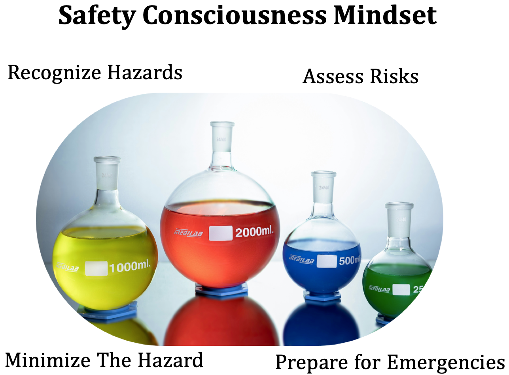

The chemistry laboratory is your opportunity to reinforce your understanding of theoretical
principles through the deliberate application of hands-on experimental techniques. This can be
an immensely rewarding experience, one with the potential to further solidify your scientific
competence and confidence. Maximizing your laboratory experience, in terms of developing
your laboratory skill set, requires the implementation of deliberate and effortful practice. The
following is intended to serve as an initial guide to assist you with maximizing your lab experience and provide the foundation to enable a connection between theory and experiment. So
that you view lecture and lab holistically as units that reinforce each other.
Safety Orientation
- Use labels on bottles and containers to identify the most important hazards of the con- tents. Use Safety Data Sheets (SDSs), which are standardized documents that contain information on the physical properties of each chemical. They also contain the physical and environmental health hazards, recommended protective measures, safety precautions for storing, handling, and transporting said chemical. The SDS also includes information on:
- The lab is also equipped with two fire extinguishers as well as a campus map indicating a specific meeting spot should the need arise to evacuate the laboratory due to an emergency. Learn the location of this campus map (know the designated meeting location) and the fire extinguishers.
- During the second lab period each student is to complete a laboratory safety quiz. To remain in the lab, each student is to score a minimum of 80% on the safety quiz.
- The video below is a good resource to help you prepare for your laboratory safety quiz.
Essential Lab Skills from a Safety Mindset
- If your instructor requires that you record data in a bound notebook, be sure to bring your bound laboratory notebook (not loose lead or spiral) to every scheduled laboratory meeting.
- During the second week of lab, you will be assigned a laboratory locker. Only you will have the combination, and therefore access, to to the equipment in your assigned locker. You are responsible for the equipment while in the course. Be diligent to ensure everything is returned at the end of each lab meeting. Also, for your benefit, ensure the cleanliness of the equipment. Brushes for larger glassware and test tubes, as well as soap are available at each sink.
- Prior to the beginning of each experiment, your instructor will provide information on the theory pertaining to the upcoming experiment. This will include advice on experi- mental techniques employed and essential safety concerns. Use a designated space in your laboratory notebook to take careful notes.
- The laboratory scheduled is available on the hard copy of course syllabus, the course syllabus on Canvas, and/or the Canvas calendar. Well in advance of each experiment identify the experiment scheduled. Ensure you are prepared to perform the experiment. Performing the experiment involves:
- Carefully reading the laboratory experimental procedure so as to be clear on the purpose, the experimental technique employed, and the type of data to be collected in lab. Spacing out your reading over several days is recommended; this will help you more effectively internalize the content.
- As you read the procedure take note of terms you are not familiar with. Do not rush your reading, slow down and take the re ect on what you are reading. This strategy will allow the content to percolate, which will allow questions to surface; write down questions as they come up.
- In your notebook create a visual outline of the experimental procedure. Translating the text from the lab manual into a visual representations of the experimental pro- cedure will you more effectively develop a mental image of the procedure you will carry out in real-life. You instructor will check your experimental outline prior to beginning the experiment.
- To help you identify the type of data your are to collect, look for the data table(s) in the lab manual. Transfer the data table(s), using blue or black ink, onto a designated spot within your laboratory notebook. Be sure to use a ruler when creating data tables in your notebook; don't create data tables free hand.
- Having engaged in the above items you have the tools to internalize the instructors message on the day of the experiment. Also, if you have not answered the above questions, now is a good time to ask your instructor. Your instructor is their to support your learning and more than glad to clarify questions you may have. Don't leave questions unanswered.
- Using blue or black ink to record qualitative observations as well as quantitative mea- surements in your laboratory notebook (this is why you have the data tables in your notebook). At the end of each experiment your instructor will check your laboratory tables and ensure you have collected the necessary data for analysis.
- Having prepared for the experiment, applied relevant safety concepts, applied the required laboratory techniques, and collected the needed experimental data, you have now ready for the next part of the experiment: (1) data analysis; (2) communication of experiment, results, and conclusions via a typed report. You have now completed the experiment.
2100 Moorpark Ave.
San Jose, CA 95128
(408) 298-2181
Division of Math & Science